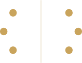

Manual de Identidade Visual & Engenharia Semiótica
Manual de Identidade Visual & Engenharia Semiótica
A Arquitetura da Atenção & Retenção
Manual oficial de marca, princípios semióticos da neurociência da atenção e catálogo completo de componentes do ecossistema Play Viral / Valéria Mendes, formatado na arquitetura de cards bento do 21st.dev.
Propósito & Engenharia Semiótica da Atenção
O Play Viral substitui o ruído aleatório das redes por um funil narrativo calculado. Aplicamos o grid assimétrico do features-8 para demonstrar os pilares neuro-persuasivos do método.
Método RVE®
Roteiro de Venda Estratégica. O fim do improviso e o início da conversão previsível.

A Regra dos 3 Segundos
O intervalo biológico no qual o cérebro decide parar a rolagem e consumir a narrativa.

Julgamento em 50ms
A percepção instantânea de autoridade visual que elimina a imagem de "curso amador".
Engenharia de Roteiro
Estrutura de 4 atos cirúrgicos: Gancho Magnético, Tensão Cognitiva, Solução RVE e CTA de Alta Conversão.
Comunidade & Mentoria
Conexão direta com Valéria Mendes e dezenas de criadores validados escalando negócios digitais.


"Viralidade sem estratégia é apenas vaidade métrica. A verdadeira maestria do Play Viral é transformar visualizações passivas em clientes leais e faturamento previsível."
Anatomia do Logotipo & Glifos Monumentais
A fusão entre o play facetado da mídia digital e a serena elegância de um monograma de alto ticket.
Pausa & Play
A decisão consciente de travar o scroll infinito e iniciar o consumo de um conteúdo de valor.
Vetor & Viralidade
A força diagonal ascendente que projeta a autoridade do mentor para além da bolha de seguidores.

Prisma de Lapidação
A transformação de ideias brutas em múltiplos ativos de alto ticket com brilho e precisão de facetas.
Sistema Cromático & Psicologia das Cores
Base mestre em Creme Nobre Editorial (#FAF8F5) com tipografia em Café Profundo (#1A120C), superando com folga o patamar de acessibilidade WCAG AAA.
Creme Nobre
Clareza editorial sem o ofuscamento do branco puro.
Creme Sutil
Contêineres de apoio e cards destacados.
Café Profundo
Máxima autoridade e conforto visual de leitura.
Ouro Líquido
Prestígio e valor percebido de mentoria executiva.
Vinho Noturno
Fundo cinematográfico para inversões de alto impacto.
Bronze Suave
Legendas e parágrafos longos balanceados.
Terracotta
Nós da thread e badges de atenção imediata.
Verde Conversão
Contato via WhatsApp e checkout assistido.
| Camada de Texto | Fundo Base | Razão de Contraste | Auditoria WCAG |
|---|---|---|---|
| Café Profundo (#1A120C) | Creme Nobre (#FAF8F5) | 15.6 : 1 | ✓ Pass AAA |
| Bronze Suave (#5D5043) | Creme Nobre (#FAF8F5) | 7.8 : 1 | ✓ Pass AAA |
| Ouro Sólido (#C8A44D) | Vinho Noturno (#160B11) | 10.4 : 1 | ✓ Pass AAA |
Hierarquia & Sistema Tipográfico
Composição tripartite: Mirante para autoridade titular, Playfair Display para refinamento clássico e Manrope para leitura digital contínua.
Catálogo Semiótico de Vetores Oficiais (Node 20:4)
Extraídos diretamente do Figma oficial, estes são os 7 blocos construtivos que compõem a linguagem visual proprietária do Play Viral.
Fio Narrativo (Thread)
A linha contínua que costura a atenção do espectador ao longo do vídeo. Os nós circulares são pontos de ancoragem da mensagem.
Vesica Piscis (Foco)
Intersecção de dois círculos de proporção áurea. Expressa a sintonia exata onde o roteiro encontra o desejo latente da audiência.
Senoide de Retenção
Oscilação harmônica de ritmo. Alterna tensão e alívio com 4 nós astronômicos que bloqueiam a perda de espectadores.

Constelação & Eixo
6 pontos de ressonância flanqueando o divisor vertical. Representam o rigor analítico e o equilíbrio visual de dados.
Rede de Bifurcação
Multiplicação do alcance orgânico. Um único roteiro se ramifica em Reels, TikTok, YouTube Shorts e carrosséis.
Guias Direcionais
Vetores de ponta áurea de traço ultrafino que orientam a progressão do olhar sem poluição visual.
Prisma Diamante
A lapidação de roteiros brutos. Facetas transparentes com reflexos metálicos acetinados.
Viewfinder Corner Ticks
Enquadramento que evoca o visor de uma câmera cinematográfica profissional.
Componentes de Interface & Padrões UI
Amostras funcionais dos componentes aplicados na landing page oficial.
1. Thread Eyebrow Badge
Rótulo superior com vetor narrativo integrado.
METODOLOGIA RVE®
2. Botão Dourado de Scroll
Acionador com halo e vetor de seta (Figma Node 9:48).
3. Card Cinematográfico Viewfinder
Bordas com cantoneiras de precisão técnica.
4. Selo Circular Rotativo 360°
Selo orbital contínuo assinado por Valéria Mendes.
Governança, Diretrizes & Exportação
Regras de ouro para manter o prestígio visual e a percepção de alto ticket do ecossistema Play Viral.
- Priorizar o fundo claro Creme Nobre (#FAF8F5) em materiais institucionais, relatórios e páginas de leitura longa.
- Utilizar o Café Escuro (#1A120C) em vez de preto puro (#000000) para manter a nobreza e eliminar a rigidez digital.
- Conectar sempre os vetores oficiais (Thread, Senoide, Vesica Piscis) a explicações metodológicas do RVE.
- Manter no mínimo 48px a 64px de respiro entre blocos de conteúdo para garantir elegância editorial.
- Nunca usar sombras coloridas difusas de alta saturação (estética de aplicativo barato).
- Não alterar a proporção áurea nem distorcer a inclinação geométrica do triângulo do logotipo.
- Evitar cores neon ou saturadas fora da paleta (vermelhos primários, amarelos solares ou degradês genéricos).
- Não usar os elementos gráficos como marcas d'água ruidosas que concorram com a legibilidade dos textos.
Exportar Manual Completo em Alta Definição
Esta página está calibrada para geração vetorial nítida em folhas A4 via @media print, separando automaticamente os capítulos e preservando 100% da nitidez gráfica.